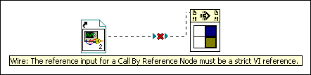

The reference input of the Call by Reference node requires a strictly typed VI reference. 
To convert a static VI reference to a strictly typed static VI reference, select Strictly Typed VI Reference from the static VI reference shortcut menu.
| Note This error also can occur for the Start Asynchronous Call node and the Wait On Asynchronous Call node. |